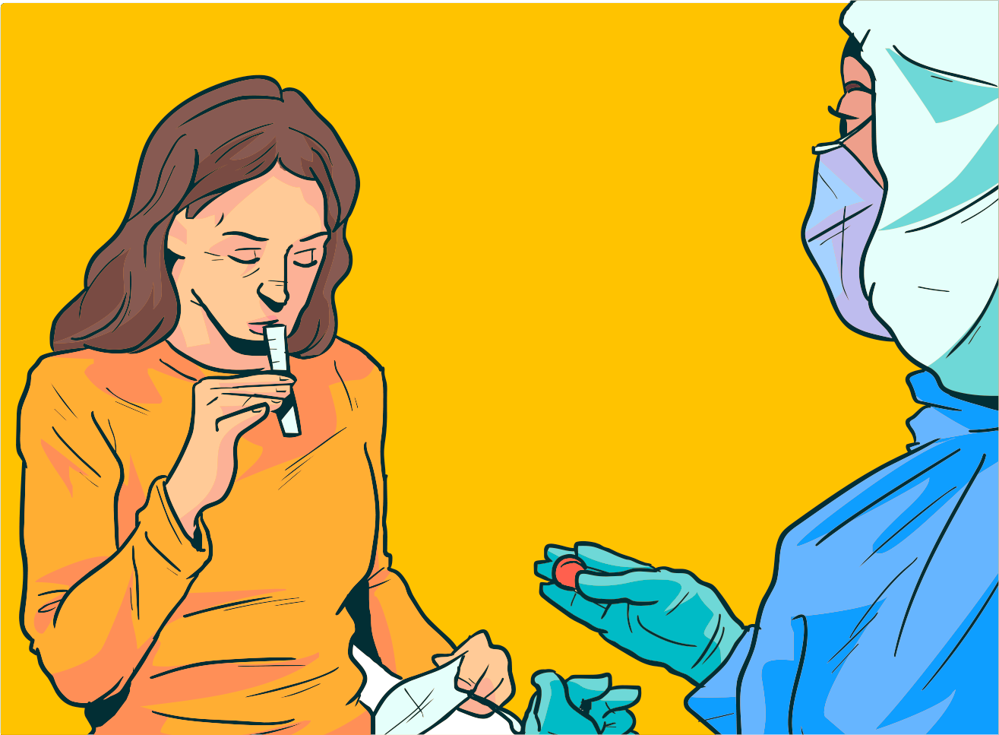

Abas
Clique em cada uma das abas e veja as etapas de prevenção da TB no sistema prisional.
Reconhecer o sintomático respiratório (SR) ou a pessoa com TB pulmonar ativa é o primeiro passo. Assim, todo profissional que trabalha no sistema prisional deve estar apto para realizar a busca ativa.
A educação permanente dos servidores aumenta a possibilidade de diagnóstico precoce de TB pulmonar e da implementação do tratamento adequado e oportuno. Instruir os indivíduos diagnosticados com a forma ativa acerca dos cuidados em relação à forma de tossir (levar o braço ou lenço à boca quando tossir) e monitorar a adesão ao tratamento.
Somente nas seguintes situações o isolamento das pessoas privadas de liberdade é necessário: casos identificados no momento do ingresso na prisão, pelo período de 15 dias; casos confirmados ou suspeitos de resistência; falência de tratamento.
Profissionais de saúde ou visitantes, ao entrarem em áreas de alto risco de transmissão (ambiente fechado e mal ventilado), por um período prolongado de permanência, devem obrigatoriamente fazer uso de máscaras tipo PFF2/N95.
O encaminhamento e atendimento de pessoas com suspeita de TB no serviço de saúde e o estabelecimento de um fluxo especial de atendimento dos sintomáticos respiratórios devem ser priorizados.
Controle e monitoramento dos contatos. Esses se referem a toda pessoa que convive no mesmo ambiente com o caso de TB positivo, no momento do diagnóstico da doença.
No caso do sistema prisional, os contatos não são somente as pessoas privadas de liberdade que dividem a mesma cela e os outros espaços comuns. Servidores do sistema penitenciário, familiares e demais pessoas que acessam o sistema também são considerados como contatos.